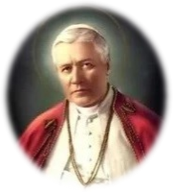
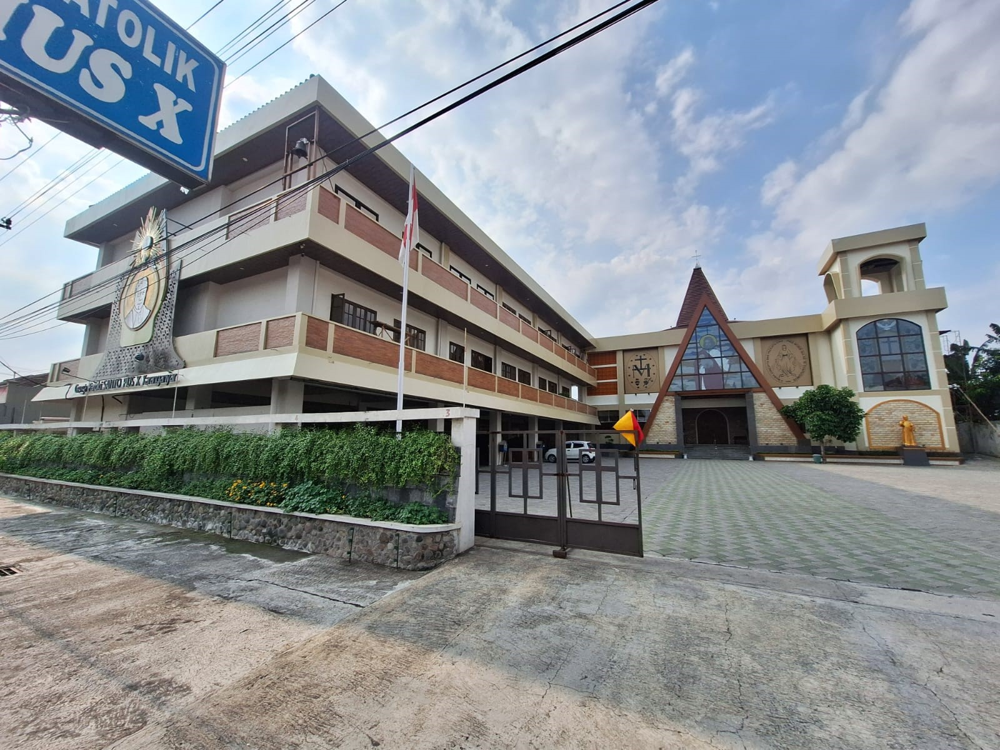

Karanganyar
Paroki Santo Pius X Karanganyar adalah komunitas umat Katolik yang bertumbuh dalam iman, bersatu dalam kasih, dan melayani dengan sukacita.
Sejak berdirinya, paroki ini menjadi pusat pembinaan iman, pelayanan sakramen, serta kegiatan sosial kemasyarakatan bagi umat di wilayah Karanganyar dan sekitarnya.
Baca Sambutan Romo
Selamat datang di Sekretariat Paroki St. PIUS X Karanganar. Silahkan chat untuk informasi lebih lanjut. 🏠👋
Open Chat